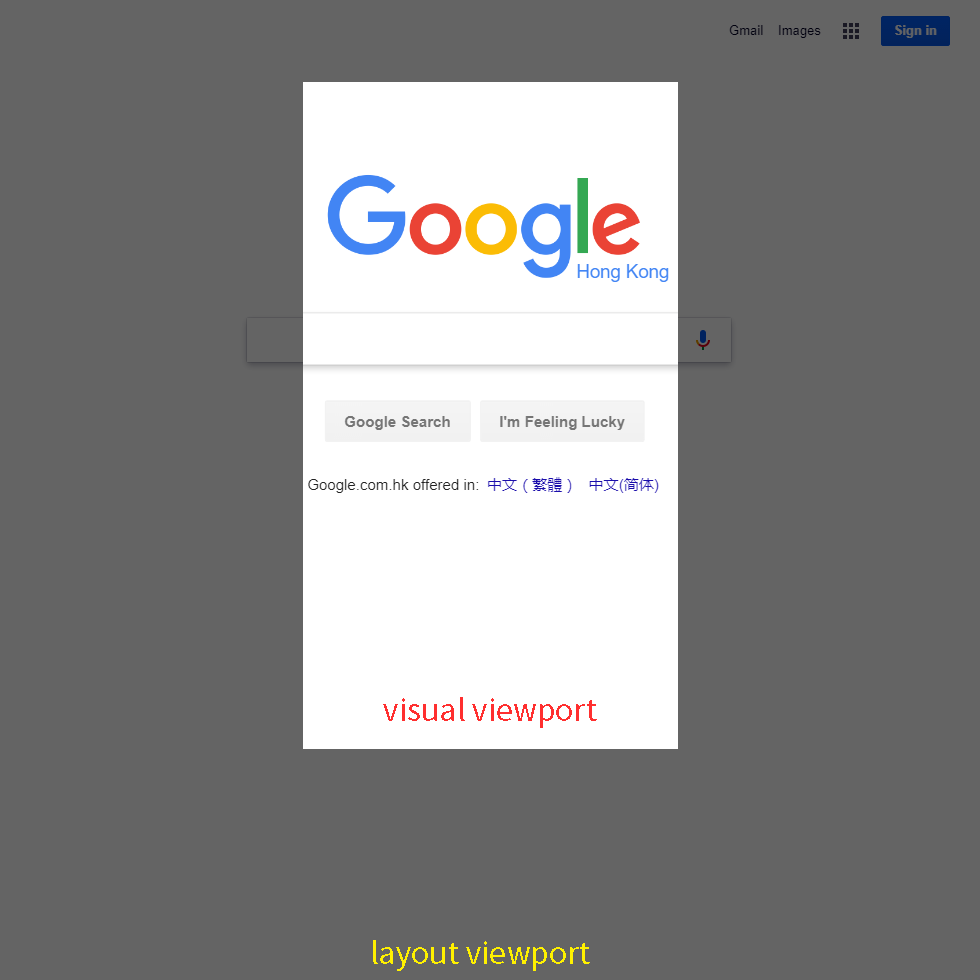

本文记录了解决 mobile chrome 上的一个 bug 的过程，这个 bug 会使手势缩放屏幕后，页面元素出现「无法点击」的情况。
引言
首先看看 chrome 61 的更新日志 ，其中写到：
You can access the relative positions of the screen content with the Visual Viewport API, exposing complex functionality like pinch-and-zoom in a more direct way.
现在，网站可以通过 Visual Viewport API 访问屏幕内容的相对位置，从而更直接地显示复杂的功能，如利用双指张合手势进行放大。
chrome 61 新添加了 visual viewport API，同时也使得 CSS 对象模型（CSSOM）的滚动属性（scroll properties）不再根据的 visual viewport 来计算，而是根据 layout viewport 来计算。
下面逐一解释这句话。
实质
先简单解释一下几个概念：
CSS 对象模型的滚动属性，其中包括了 windows 对象上的这些属性：
- pageXOffset
- pageYOffset
- scrollX
- scrollY
两种 viewport 分别指的是：
visual viewport指的是浏览器中可视的部分layout viewport指的是浏览器中整个文档元素，也包含看不到的部分
下图清晰的表示了两种 viewport：

在以前的 chrome 中，以上属性值的计算是相对于 visual viewport 来的。举个栗子：
在手机版浏览器上，我们首先 缩放屏幕，使视图移动到页面的中间，然后尝试获取 window.scrollX ，即页面向右滑动的距离，会得到不为 0 某个数值。
但这个值错误的。事实上页面并没有向右滚动过，我们只是缩放了屏幕，页面还是在原来的位置上，没有发生过滚动，只是我们的观察区域发生了改变。因此，正确的值应该是 0。
而在电脑版浏览器上，如果页面的宽度大于我们屏幕的宽度，我们向右滚动，自然而然会获得到一个 window.scrollX 的正确值（非 0）。
正确的做法应该是：根据 layout viewport 计算滚动属。这也是 chrome 61 中的实现方式，并且，添加了新的 visual viewport API，以满足计算元素相对浏览器视图所处位置的需要。
修复
在 chrome 61 以前的版本中，有三种办法解决这个问题：
chrome 21 以后的版本中，开启实验室功能
#inert-visual-viewport即可。具体方法：
在浏览器地址栏输入：chrome://flags#inert-visual-viewport，然后开启它。当你需要获取
window.scrollX/scrollY时，替换为如下语句：var offX = -document.documentElement.getBoundingClientRect().left var offY = -document.documentElement.getBoundingClientRect().top为你的网页添加 ployfill，代码如下。
注意：Object.defineProperty(window, 'pageXOffset', {...}) 这样的做法非常「脏」，不建议使用这种做法。
写在最后
以上内容都是我个人的理解，如果有错误的地方，洗耳恭听。
顺带一提，webxoss/webxoss-core#44 这个问题终于如愿地解决了，心里也是挺开心的。
最后，特别感谢 团子 的悉心指导。